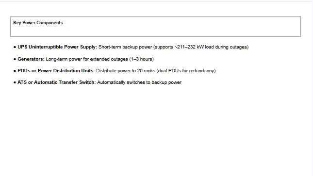
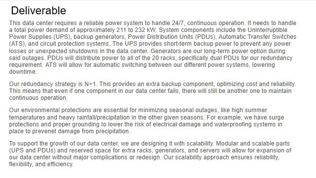
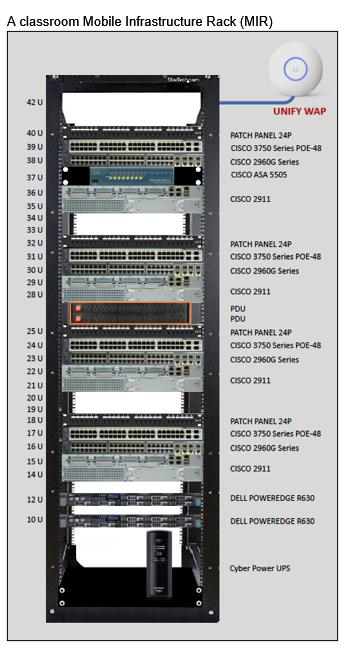

Data Center Technician | Infrastructure & Systems
Network Deployment Technician with hands-on experience deploying and maintaining network infrastructure within Amazon Web Services (AWS) data centers. Experienced with fiber optic and copper cabling, rack integration, hardware installation, connectivity validation, and infrastructure troubleshooting. Strong foundation in Linux, networking fundamentals, and data center operations, with a passion for designing reliable and scalable infrastructure.



Designed a scalable data center power system supporting up to ~900 kW deployments. Calculated rack-level power (~1.8 kW per rack) and total system load. Implemented UPS, generators, PDUs, and ATS systems to maintain uptime. Applied N+1 redundancy and evaluated environmental risks with mitigation strategies.
Cloud-hosted full-stack application built with React, Supabase, and Vercel featuring database integration, authentication, and responsive design.
Built a Java-based system demonstrating logic processing, memory handling, and performance under continuous execution.
Implemented an optimized caching system focused on efficient data retrieval and system performance.
Deploy and maintain network infrastructure within Amazon Web Services (via TEKSystems) data centers.
Contributed to a geospatial research initiative by applying GIS software, remote sensing, and drone route optimization techniques to analyze large geospatial datasets and support environmental monitoring. This experience strengthened my analytical thinking, systems mindset, and ability to solve complex technical problems using data—an approach I continue to apply while deploying and maintaining critical network infrastructure today.
Completed NASA's Virginia Earth System Science Scholars program while earning four transferable college credits. Conducted research on Earth's changing systems, analyzed scientific data, and collaborated on designing a proposed Earth observation mission. This experience introduced me to systems thinking, technical research, and collaborative engineering, laying the foundation for how I approach infrastructure design and troubleshooting today.
Selected for NASA's Virginia Space Coast Scholars program after completing the 80-hour online STEM curriculum. Participated in a residential academy where I collaborated with a multidisciplinary team to develop and present an original scientific experiment to NASA professionals. This experience sparked my passion for engineering and taught me the value of teamwork, leadership, and solving challenging technical problems—principles that continue to guide my professional growth today.